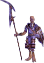
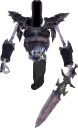
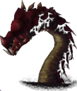

<!DOCTYPE html>
<html style="height: 100%; margin: 0;">
<head>
<title>Regnum.Online Maps (Champions of Regnum Interactive Online World Map)</title>
<meta name="description" content="Player-Made Champions of Regnum interactive Online Map including all Crafting Bosses, Boss Monsters, NPCs, Fortifications, Castles, Cities and Points of Interest">
<meta name="keywords" content="Regnum, Online, Maps, Champions of Regnum, Regnum Crafting, Regnum bosses, Regnum NPCs">
<meta name="viewport" content="width=device-width, inital-scale=1.0">
<meta http-equiv="expires" content="0">
<link rel="stylesheet" href="leaflet/leaflet.css">
<link rel="stylesheet" href="scripts/L.Control.HtmlLegend.css">
<link rel="stylesheet" href="https://cdnjs.cloudflare.com/ajax/libs/leaflet.draw/0.2.3/leaflet.draw.css" />
<link rel="icon" href="images/favicon.ico" type="image/x-icon" />
<script src="leaflet/leaflet-src.js"></script>
<script src="scripts/rastercoords.js"></script>
<script src="scripts/L.Control.HtmlLegend.js"></script>
<script src="scripts/leaflet.awesome-markers.js"></script>
<script src="https://cdnjs.cloudflare.com/ajax/libs/jquery/3.7.1/jquery.min.js"></script>
<script src="https://cdnjs.cloudflare.com/ajax/libs/leaflet.draw/0.2.3/leaflet.draw.js"></script>

<script src="scripts/leaflet-mapkey-icon-master/dist/L.Icon.Mapkey.js"></script>
<link rel="stylesheet" type="text/css" href="scripts/leaflet-mapkey-icon-master/dist/MapkeyIcons.css" />
<link rel="stylesheet" href="https://code.ionicframework.com/ionicons/1.5.2/css/ionicons.min.css">
<link rel="stylesheet" href="scripts/leaflet.awesome-markers.css">
<link rel="stylesheet" href="https://cdnjs.cloudflare.com/ajax/libs/font-awesome/4.7.0/css/font-awesome.css" />
</head>

<body style="height:100%;">

<div id ="map" style="width:100%; height:100%; background: #000000;"></div>   
   
<script type="text/javascript">

//-------------------------------------------------------------------//
    
// Declare Map Object


// Declare Map Object
//var map = L.map('map').setView([0, 0], 1);    


  var img = [
    6130, // original width of image
    6180 // original height of image
  ]
  // create the map
  var map = L.map('map', {minZoom: 1,maxZoom: 7,crs: L.CRS.Simple})

  

  // assign map and image dimensions
  var rc = new L.RasterCoords(map, img)
  // set max zoom Level (might be `x` if gdal2tiles was called with `-z 0-x` option)
  map.setMaxZoom(rc.zoomLevel(7))
  // set the view in the middle of the image
  map.setView(rc.unproject([img[0] / 2, img[1] / 2]), 3)


  // the tile layer containing the image generated with gdal2tiles --leaflet ...
  L.tileLayer('./tiles/{z}/{x}/{y}.png', {
    noWrap: true,
    attribution: 'Contribute on <a href="https://github.com/Joshua2504/Regnum.Online" target="_blank">GitHub</a><br>...'
  }).addTo(map)

  
  /// set current view
  
//map.fitBounds([
//    [0, 8870],
//    [0, 8870]
//]);
  
var yx = L.latLng;

var xy = function(x, y) {
    if (L.Util.isArray(x)) {    // When doing xy([x, y]);
        return yx(x[1], x[0]);
    }
    return yx(y, x);  // When doing xy(x, y);
};

//-------------------------------------------------------------------//

// ? 6142

// fullscreen


//var bounds = [[0,0], [6150,6150]];

// set markers on click events in the map
  map.on('click', function (event) {
    var coords = rc.project(event.latlng)
    var marker = L.marker(rc.unproject(coords))
      .addTo(layerBounds)
    marker.bindPopup('[' + Math.floor(coords.x) + ',' + Math.floor(coords.y) + ']')
      .openPopup()
  })

 
//-------------------------------------------------------------------//

// ICONS

var icon_npc = L.icon.mapkey({icon:"n",color:'white',background:'blue',size:5});
var icon_city = L.icon.mapkey({icon:"cityhall",size:25});
var icon_castle = L.icon.mapkey({icon:"castle",size:25});
var icon_fort = L.icon.mapkey({icon:"fort",size:25});
var icon_sight = L.icon.mapkey({icon:"eye",color:'blue',background:'yellow',size:15});
var icon_crafting_npc = L.icon.mapkey({icon:"n",color:'white',background:'red',size:5});
var icon_crafting_boss = L.icon.mapkey({icon:"adit",color:'white',background:'red',size:25});
var icon_crafting_boss_small = L.icon.mapkey({icon:"adit",color:'white',background:'red',size:20});
var icon_shop = L.icon.mapkey({icon:"market_place",color:'white',background:'#a37ec7',size:20});
var icon_champion = L.icon.mapkey({icon:"battlefield",color:'white',background:'#a37ec7',size:20});
var icon_superboss = L.icon.mapkey({icon:"battlefield",color:'white',background:'#a37ec7',size:25});
var icon_telep = L.icon.mapkey({icon:"airport",color:'white',background:'blue',size:20});

var icon_superboss_daen_rha = L.icon({iconUrl:'images/icons/daen_rha.png',iconSize:[30,44],});
var icon_superboss_daen_rha_respawn = L.icon({iconUrl:'scripts/boss/rha.php',});
var icon_superboss_evendim = L.icon({iconUrl:'images/icons/evendim.png',iconSize:[26,44],});
var icon_superboss_evendim_respawn = L.icon({iconUrl:'scripts/boss/eve.php',});
var icon_superboss_thorkul = L.icon({iconUrl:'images/icons/thorkul.png',iconSize:[27,32],});
var icon_superboss_thorkul_respawn = L.icon({iconUrl:'scripts/boss/thork.php',});
var icon_sight_island_1 = L.icon({iconUrl:'images/icons/sight_island_1.png',iconSize:[25,25],});
var icon_altar = L.icon({iconUrl:'images/icons/altar.png',iconSize:[16,16],});
var icon_pendants = L.AwesomeMarkers.icon({prefix:'fa',icon:'balance-scale',markerColor: 'red'});


// CITIES

var fisgael = L.marker(rc.unproject([1121.22,4580.70]),{icon:icon_city}).bindTooltip('<b>Fisgael City</b>').openTooltip();
var korsum = L.marker(rc.unproject([1648,3901]),{icon:icon_city}).bindTooltip('<b>Korsum</b>').openTooltip();
var raeraia = L.marker(rc.unproject([2388,4405]),{icon:icon_city}).bindTooltip('<b>Raeraia</b>').openTooltip();
var dohsim = L.marker(rc.unproject([2758,5206]),{icon:icon_city}).bindTooltip('<b>Dohsim</b>').openTooltip();
var ulren_asir = L.marker(rc.unproject([1098,5500]),{icon:icon_city}).bindTooltip('<b>Ulren Asir</b>').openTooltip();
var ilreah = L.marker(rc.unproject([433,5458]),{icon:icon_city}).bindTooltip('<b>Ilreah</b>').openTooltip();

var montsognir = L.marker(rc.unproject([1042,1334]),{icon:icon_city}).bindTooltip('<b>Montsognir</b>').openTooltip();
var hopstad = L.marker(rc.unproject([1938,1380]),{icon:icon_city}).bindTooltip('<b>Hopstad</b>').openTooltip();
var birka = L.marker(rc.unproject([1220,2016]),{icon:icon_city}).bindTooltip('<b>Birka</b>').openTooltip();
var gokstad = L.marker(rc.unproject([126,2096]),{icon:icon_city}).bindTooltip('<b>Gokstad</b>').openTooltip();
var rottersvall = L.marker(rc.unproject([900,814]),{icon:icon_city}).bindTooltip('<b>Rottersvall</b>').openTooltip();
var skolheim = L.marker(rc.unproject([1239,430]),{icon:icon_city}).bindTooltip('<b>Skolheim</b>').openTooltip();

var nasraah_tej = L.marker(rc.unproject([4832,808]),{icon:icon_city}).bindTooltip('<b>Nasraah Tej</b>').openTooltip();
var essadi = L.marker(rc.unproject([5145,1139]),{icon:icon_city}).bindTooltip('<b>Essadi</b>').openTooltip();
var altaruk = L.marker(rc.unproject([4664,1503]),{icon:icon_city}).bindTooltip('<b>Altaruk</b>').openTooltip();
var meleketi = L.marker(rc.unproject([5330,1961]),{icon:icon_city}).bindTooltip('<b>Meleketi</b>').openTooltip();
var medenet = L.marker(rc.unproject([4573,2249]),{icon:icon_city}).bindTooltip('<b>Medenet</b>').openTooltip();
var allahed = L.marker(rc.unproject([3895,1058]),{icon:icon_city}).bindTooltip('<b>Allahed</b>').openTooltip();

// ALTARS

var altar_herbred = L.marker(rc.unproject([2538,3507]),{icon:icon_altar}).bindTooltip('<b>Altar of Rescurection</b>').openTooltip();
var altar_algaros = L.marker(rc.unproject([1789,3522]),{icon:icon_altar}).bindTooltip('<b>Altar of Rescurection</b>').openTooltip();
var altar_efe = L.marker(rc.unproject([2480,4315]),{icon:icon_altar}).bindTooltip('<b>Altar of Rescurection</b>').openTooltip();
var altar_dohsim = L.marker(rc.unproject([2732,5262]),{icon:icon_altar}).bindTooltip('<b>Altar of Rescurection</b>').openTooltip();
var altar_raeraia = L.marker(rc.unproject([2486,4350]),{icon:icon_altar}).bindTooltip('<b>Altar of Rescurection</b>').openTooltip();
var altar_korsum = L.marker(rc.unproject([1707,3987]),{icon:icon_altar}).bindTooltip('<b>Altar of Rescurection</b>').openTooltip();
var altar_fisgael = L.marker(rc.unproject([1054,4525]),{icon:icon_altar}).bindTooltip('<b>Altar of Rescurection</b>').openTooltip();
var altar_1 = L.marker(rc.unproject([1875,5005]),{icon:icon_altar}).bindTooltip('<b>Altar of Rescurection</b>').openTooltip();
var altar_2 = L.marker(rc.unproject([1941,4242]),{icon:icon_altar}).bindTooltip('<b>Altar of Rescurection</b>').openTooltip();

var altar_samal = L.marker(rc.unproject([3525,2234]),{icon:icon_altar}).bindTooltip('<b>Altar of Rescurection</b>').openTooltip();
var altar_menirah = L.marker(rc.unproject([3567,1595]),{icon:icon_altar}).bindTooltip('<b>Altar of Rescurection</b>').openTooltip();
var altar_shaanarid = L.marker(rc.unproject([4191,3211]),{icon:icon_altar}).bindTooltip('<b>Altar of Rescurection</b>').openTooltip();
var altar_nasraah_tej = L.marker(rc.unproject([4824,776]),{icon:icon_altar}).bindTooltip('<b>Altar of Rescurection</b>').openTooltip();
var altar_essadi = L.marker(rc.unproject([5151,1234]),{icon:icon_altar}).bindTooltip('<b>Altar of Rescurection</b>').openTooltip();
var altar_allahed = L.marker(rc.unproject([4098,1127]),{icon:icon_altar}).bindTooltip('<b>Altar of Rescurection</b>').openTooltip();
var altar_altaruk = L.marker(rc.unproject([4798,1558]),{icon:icon_altar}).bindTooltip('<b>Altar of Rescurection</b>').openTooltip();
var altar_meleketi = L.marker(rc.unproject([5341,1974]),{icon:icon_altar}).bindTooltip('<b>Altar of Rescurection</b>').openTooltip();
var altar_medenet = L.marker(rc.unproject([4512,2111]),{icon:icon_altar}).bindTooltip('<b>Altar of Rescurection</b>').openTooltip();

var altar_aggersborg = L.marker(rc.unproject([2570,2220]),{icon:icon_altar}).bindTooltip('<b>Altar of Rescurection</b>').openTooltip();
var altar_trelleborg = L.marker(rc.unproject([1771,2632]),{icon:icon_altar}).bindTooltip('<b>Altar of Rescurection</b>').openTooltip();
var altar_imperia = L.marker(rc.unproject([2915,1571]),{icon:icon_altar}).bindTooltip('<b>Altar of Rescurection</b>').openTooltip();
var altar_montsognir = L.marker(rc.unproject([1080,1338]),{icon:icon_altar}).bindTooltip('<b>Altar of Rescurection</b>').openTooltip();
var altar_hopstad = L.marker(rc.unproject([1863,1415]),{icon:icon_altar}).bindTooltip('<b>Altar of Rescurection</b>').openTooltip();
var altar_birka = L.marker(rc.unproject([1088,2113]),{icon:icon_altar}).bindTooltip('<b>Altar of Rescurection</b>').openTooltip();
var altar_gokstad = L.marker(rc.unproject([175,2221]),{icon:icon_altar}).bindTooltip('<b>Altar of Rescurection</b>').openTooltip();
var altar_3 = L.marker(rc.unproject([1512,1428]),{icon:icon_altar}).bindTooltip('<b>Altar of Rescurection</b>').openTooltip();

// FORTS

var syrtis_door = L.marker(rc.unproject([2337,4065]),{icon:icon_castle}).bindTooltip('<b>Syrtis Door</b>').openTooltip();
var eferias = L.marker(rc.unproject([3618,4742]),{icon:icon_castle}).bindTooltip('<b>Eferias Castle</b>').openTooltip();
var herbred = L.marker(rc.unproject([2844,3233]),{icon:icon_fort}).bindTooltip('<b>Herbred Fort</b>').openTooltip();
var algaros = L.marker(rc.unproject([1710,3212]),{icon:icon_fort}).bindTooltip('<b>Algaros Fort</b>').openTooltip();
var ignis_door = L.marker(rc.unproject([4153,1982]),{icon:icon_castle}).bindTooltip('<b>Ignis Door</b>').openTooltip();
var shaanarid = L.marker(rc.unproject([4611,3145]),{icon:icon_castle}).bindTooltip('<b>Shaanarid Castle</b>').openTooltip();
var samal = L.marker(rc.unproject([3699,2553]),{icon:icon_fort}).bindTooltip('<b>Samal Fort</b>').openTooltip();
var menirah = L.marker(rc.unproject([3355,1811]),{icon:icon_fort}).bindTooltip('<b>Menirah Fort</b>').openTooltip();
var alsius_door = L.marker(rc.unproject([1743,2116]),{icon:icon_castle}).bindTooltip('<b>Alsius Door</b>').openTooltip();
var imperia = L.marker(rc.unproject([2786,1232]),{icon:icon_castle}).bindTooltip('<b>Imperia Castle</b>').openTooltip();
var aggersborg = L.marker(rc.unproject([2692,2527]),{icon:icon_fort}).bindTooltip('<b>Aggersborg Fort</b>').openTooltip();
var trelleborg = L.marker(rc.unproject([1626,2528]),{icon:icon_fort}).bindTooltip('<b>Trelleborg Fort</b>').openTooltip();

// MERCHANTS

var shop_samal = L.marker(rc.unproject([3694,2247]),{icon:icon_shop}).bindPopup('<b>Dolit, Lerilehn, Arxel (Merchant)</b>'+'');
var shop_shaanarid = L.marker(rc.unproject([4085,3128]),{icon:icon_shop}).bindPopup('<b>Sigfrid (Weaponsmith)</b>');
var shop_menirah = L.marker(rc.unproject([3500,1440]),{icon:icon_shop}).bindPopup('<b>Sultar (Zauberer), Imrak (Zauberer), Rodlah (Merchant), Akite (Bogner)</b>');

var shop_algaros = L.marker(rc.unproject([1455,3265]),{icon:icon_shop}).bindPopup('<b>Arabell (Weaponsmith), Aren Miret (Weaponsmith), Mia Arle (Zauberer), Deina (Merchant)</b>');
var shop_eferias = L.marker(rc.unproject([3513,4156]),{icon:icon_shop}).bindPopup('<b>Jabeline (Bogner)</b>');
var shop_herbred = L.marker(rc.unproject([2595,3464]),{icon:icon_shop}).bindPopup('<b>Janea (Merchant), Letur, Viara</b>'+'');

var shop_imperia = L.marker(rc.unproject([2876,1808]),{icon:icon_shop}).bindPopup('<b>Korbus</b> (Alsius Weaponsmith)');
var shop_aggers = L.marker(rc.unproject([2378,2326]),{icon:icon_shop}).bindPopup('<b>Tria, Rotaren (Merchant), Makret</b>');
var shop_trelle = L.marker(rc.unproject([1290,2752]),{icon:icon_shop}).bindPopup('<b>Asgaris (Zauberer), Grethor (Bogner), Bramar (Merchant)</b>');
  
// CRAFTING NPCs

var lorvel = L.marker(rc.unproject([1088.20,4577.25]),{icon:icon_crafting_npc}).bindTooltip('<b>Lorvel</b> (Craftmaster)').openTooltip();
var lulia = L.marker(rc.unproject([1169.92,2075.06]),{icon:icon_crafting_npc}).bindTooltip('<b>Lulia</b> (Craftmaster)').openTooltip();
var osthan = L.marker(rc.unproject([950.11,1323.02]),{icon:icon_crafting_npc}).bindTooltip('<b>Osthan</b> (Craftmaster)').openTooltip();
var tuldor = L.marker(rc.unproject([156.02,2049.79]),{icon:icon_crafting_npc}).bindTooltip('<b>Tuldor</b> (Craftmaster)').openTooltip();
var eadmar_bronzearm = L.marker(rc.unproject([2424.12,4372.50]),{icon:icon_crafting_npc}).bindTooltip('<b>Eadmer Bronzearm</b> (Craftmaster)').openTooltip();
var rodlut = L.marker(rc.unproject([2642,1219]),{icon:icon_crafting_npc}).bindTooltip('<b>Rodlut</b> (Craftmaster)').openTooltip();
	
// NPCs

var asgeir = L.marker(rc.unproject([904.76,1326.65]),{icon:icon_npc}).bindTooltip('<b>Asgeir</b> (Clan Notary)').openTooltip();
var boltar = L.marker(rc.unproject([1732,3061]),{icon:icon_npc}).bindTooltip('<b>Boltar</b> (Alsius Denizen)').openTooltip();
var dalmora = L.marker(rc.unproject([2936.81,2887.72]),{icon:icon_npc}).bindTooltip('<b>Dalmora</b> (Neutral Denizen)').openTooltip();
var dardanus_shadowhawk = L.marker(rc.unproject([3494.86,3476.51]),{icon:icon_npc}).bindTooltip('<b>Dardanus Shadowhawk</b> (Merchant)').openTooltip();
var eric_vantassle = L.marker(rc.unproject([312.12,1859.17]),{icon:icon_npc}).bindTooltip('<b>Eric Vantassle</b> (Weaponsmith)').openTooltip();
var igna_myneely = L.marker(rc.unproject([4308.97,6048.77]),{icon:icon_npc}).bindTooltip('<b>Igna McNeely</b> (Neutral Denizen)').openTooltip();
var laranda_shadowhawk = L.marker(rc.unproject([2197,5468]),{icon:icon_npc}).bindTooltip('<b>Laranda Shadowhawk</b> (Denizen)').openTooltip();
var malaguy = L.marker(rc.unproject([2359.52,5578.16]),{icon:icon_npc}).bindTooltip('<b>Malaguy</b> (Denizen)').openTooltip();
var melarak = L.marker(rc.unproject([2395,4672]),{icon:icon_npc}).bindTooltip('<b>Melarak</b> (Herbalist)').openTooltip();
var sighild = L.marker(rc.unproject([828.94,1178.82]),{icon:icon_npc}).bindTooltip('<b>Sighild</b> (Denizen)').openTooltip();
var tarsus = L.marker(rc.unproject([1104.61,456.02]),{icon:icon_npc}).bindTooltip('<b>Tarsus</b> (Denizen)').openTooltip();
var vania_vantassle_shadowborn = L.marker(rc.unproject([533,1920]),{icon:icon_npc}).bindTooltip('<b>Vania Vantassle Shadowborn</b> (Denizen)').openTooltip();
var vermil_shadowborn = L.marker(rc.unproject([318.69,1851.97]),{icon:icon_npc}).bindTooltip('<b>Vermil Shadowborn</b> (Blacksmith)').openTooltip();
var vilcor = L.marker(rc.unproject([754.72,1908.03]),{icon:icon_npc}).bindTooltip('<b>Vilcor</b> (Denizen)').openTooltip();

// ARENAS

var arena_syrtis = L.marker(rc.unproject([2957,5542]),{icon:icon_npc}).bindTooltip('<b>Arena Guardian</b>').openTooltip();

// CRAFTING BOSSES

var nekhbit = L.marker(rc.unproject([4175,2458]),{icon:icon_crafting_boss}).bindTooltip('<b>Nekhbit (LV61)</b>').openTooltip();
var mrotgor = L.marker(rc.unproject([2210,3770]),{icon:icon_crafting_boss}).bindTooltip('<b>Mrotgor (LV61)</b>').openTooltip();
var bjarr = L.marker(rc.unproject([2180,1800]),{icon:icon_crafting_boss}).bindTooltip('<b>Bjarr (LV61)</b>').openTooltip();
var urrgog = L.marker(rc.unproject([2767,2249]),{icon:icon_crafting_boss_small}).bindTooltip('<b>Urrgog (LV60)</b>').openTooltip();
var kregog = L.marker(rc.unproject([3910,2916]),{icon:icon_crafting_boss_small}).bindTooltip('<b>Kregog (LV60)</b>').openTooltip();
var gobgog = L.marker(rc.unproject([1989,3008]),{icon:icon_crafting_boss_small}).bindTooltip('<b>Gobgog (LV60)</b>').openTooltip();
var kurgo = L.marker(rc.unproject([1976,1992]),{icon:icon_crafting_boss_small}).bindTooltip('<b>Kurgo (LV30)</b>').openTooltip();
var tokmo = L.marker(rc.unproject([3785,1970]),{icon:icon_crafting_boss_small}).bindTooltip('<b>Tokmo (LV30)</b>').openTooltip();
var delebon = L.marker(rc.unproject([2807,4102]),{icon:icon_crafting_boss_small}).bindTooltip('<b>Delebon (LV30)</b>').openTooltip();

// CHAMPIONS

var soras = L.marker(rc.unproject([1640,5690]),{icon:icon_champion}).bindTooltip('<b>Soras (LV9)</b><br>Drop: Amulet').openTooltip();
var punzas = L.marker(rc.unproject([1500,5880]),{icon:icon_champion}).bindTooltip('<b>Punzas (LV10)</b><br>Drop: Bow').openTooltip();
var avalon = L.marker(rc.unproject([1200,4800]),{icon:icon_champion}).bindTooltip('<b>Avalon (LV19)</b><br>Drop: Amulet').openTooltip();
var rizofag = L.marker(rc.unproject([1930,4500]),{icon:icon_champion}).bindTooltip('<b>Rizofag (LV31)</b><br>Drop: Shield').openTooltip();
var sambro = L.marker(rc.unproject([2050,5300]),{icon:icon_champion}).bindTooltip('<b>Sambro</b><br>Drop: Staff').openTooltip();
var satarco = L.marker(rc.unproject([2870,4620]),{icon:icon_champion}).bindTooltip('<b>Satarco (LV50)</b><br>Drop: Sword').openTooltip();

var yelamid = L.marker(rc.unproject([5400,530]),{icon:icon_champion}).bindTooltip('<b>Yelamid (LV10)</b>').openTooltip();
var gohos = L.marker(rc.unproject([4550,1200]),{icon:icon_champion}).bindTooltip('<b>Gohos</b>').openTooltip();
var jidenah = L.marker(rc.unproject([4300,1600]),{icon:icon_champion}).bindTooltip('<b>Jidenah (LV28)</b>').openTooltip();
var graj = L.marker(rc.unproject([5340,2820]),{icon:icon_champion}).bindTooltip('<b>Graj (LV42)</b>').openTooltip();
var kontaron = L.marker(rc.unproject([5400,2625]),{icon:icon_champion}).bindTooltip('<b>Kontaron (LV50)</b>').openTooltip();

var thorburn = L.marker(rc.unproject([620,480]),{icon:icon_champion}).bindTooltip('<b>Thorburn (LV9)</b><br>Drop: Helm').openTooltip();
var levias = L.marker(rc.unproject([179,1045]),{icon:icon_champion}).bindTooltip('<b>Levias (LV11)</b><br>Drop: Amulet').openTooltip();
var olumor = L.marker(rc.unproject([1560,1080]),{icon:icon_champion}).bindTooltip('<b>Olumor</b><br>Drop: Tunika').openTooltip();
var gorlak = L.marker(rc.unproject([1100,1950]),{icon:icon_champion}).bindTooltip('<b>Gorlag (LV29)</b><br>Drop: Bow').openTooltip();
var ades = L.marker(rc.unproject([2000,1700]),{icon:icon_champion}).bindTooltip('<b>Ades (LV40)</b><br>Drop: Staff').openTooltip();
var asyr = L.marker(rc.unproject([1685,1530]),{icon:icon_champion}).bindTooltip('<b>Asyr (LV50)</b><br>Drop: Amulet').openTooltip();

// SUPER BOSSES

var daen_rha_spawn = L.marker(rc.unproject([3880,2708]),{icon:icon_superboss_daen_rha_respawn});
var daen_rha = L.marker(rc.unproject([3890,2618]),{icon:icon_superboss_daen_rha}).bindTooltip('<b>Daen Rha</b><br>').openTooltip();
var evendim_spawn = L.marker(rc.unproject([3134,3857]),{icon:icon_superboss_evendim_respawn});
var evendim = L.marker(rc.unproject([3144,3767]),{icon:icon_superboss_evendim}).bindTooltip('<b>Evendim</b><br>').openTooltip();
var thorkul_spawn = L.marker(rc.unproject([2380,2000]),{icon:icon_superboss_thorkul_respawn});
var thorkul = L.marker(rc.unproject([2334,1968]),{icon:icon_superboss_thorkul}).bindTooltip('<b>Thorkul</b><br>').openTooltip();

var tenax = L.marker(rc.unproject([4252,1569]),{icon:icon_crafting_boss}).bindTooltip('<b>Tenax</b>').openTooltip();
var tenax_npc = L.marker(rc.unproject([4258,1565]),{icon:icon_npc}).bindTooltip('<b>Guardian de la Cueva</b> (Guard)').openTooltip();
var alastor = L.marker(rc.unproject([1662,979]),{icon:icon_crafting_boss}).bindTooltip('<b>Alastor</b>').openTooltip();
var alastor_npc = L.marker(rc.unproject([1678,979]),{icon:icon_npc}).bindTooltip('<b>Guardian de la Cueva</b> (Guard)').openTooltip();
var vesper = L.marker(rc.unproject([2375,5464]),{icon:icon_crafting_boss}).bindTooltip('<b>Vesper</b>').openTooltip();
var vesper_npc = L.marker(rc.unproject([2407,5455]),{icon:icon_npc}).bindTooltip('<b>Guardian de la Cueva</b> (Guard)').openTooltip();

var alsius_tomb_elements = L.marker(rc.unproject([969,1843]),{icon:icon_pendants}).bindTooltip('<b>Tomb of the Elements</b>').openTooltip();
var alsius_earth_pendant = L.marker(rc.unproject([530,1630]),{icon:icon_pendants}).bindTooltip('<b>Earth Pendant Holder</b>').openTooltip();
var alsius_earth_alter = L.marker(rc.unproject([522,1613]),{icon:icon_pendants}).bindTooltip('<b>Altar of Earth</b>').openTooltip();
var alsius_water_pendant = L.marker(rc.unproject([620,1177]),{icon:icon_pendants}).bindTooltip('<b>Water Pendant Holder</b>').openTooltip();
var alsius_water_altar = L.marker(rc.unproject([586,1209]),{icon:icon_pendants}).bindTooltip('<b>Altar of Water</b>').openTooltip();
var alsius_fire_pendant = L.marker(rc.unproject([1955,1692]),{icon:icon_pendants}).bindTooltip('<b>Fire Pendant Holder</b>').openTooltip();
var alsius_fire_altar = L.marker(rc.unproject([2000,1666]),{icon:icon_pendants}).bindTooltip('<b>Altar of Fire</b>').openTooltip();
var alsius_wind_pendant = L.marker(rc.unproject([812,2241]),{icon:icon_pendants}).bindTooltip('<b>Wind Pendant Holder</b>').openTooltip();
var alsius_wind_altar = L.marker(rc.unproject([853,2249]),{icon:icon_pendants}).bindTooltip('<b>Altar of Wind</b>').openTooltip();

var syrtis_water_pendant = L.marker(rc.unproject([1885,4788]),{icon:icon_pendants}).bindTooltip('<b>Water Pendant Holder</b>').openTooltip();
var syrtis_water_altar = L.marker(rc.unproject([1742,4670]),{icon:icon_pendants}).bindTooltip('<b>Altar of Water</b>').openTooltip();
var syrtis_earth_pendant = L.marker(rc.unproject([2534,4168]),{icon:icon_pendants}).bindTooltip('<b>Earth Pendant Holder</b>').openTooltip();
var syrtis_earth_altar = L.marker(rc.unproject([2576,4198]),{icon:icon_pendants}).bindTooltip('<b>Altar of Earth</b>').openTooltip();
var syrtis_wind_pendant = L.marker(rc.unproject([1822,3932]),{icon:icon_pendants}).bindTooltip('<b>Wind Pendant Holder</b>').openTooltip();
var syrtis_wind_altar = L.marker(rc.unproject([1833,3881]),{icon:icon_pendants}).bindTooltip('<b>Altar of Wind</b>').openTooltip();
var syrtis_fire_pendant = L.marker(rc.unproject([2550,5349]),{icon:icon_pendants}).bindTooltip('<b>Fire Pendant Holder</b>').openTooltip();
var syrtis_fire_altar = L.marker(rc.unproject([2521,5334]),{icon:icon_pendants}).bindTooltip('<b>Altar of Fire</b>').openTooltip();

var ignis_water_pendant = L.marker(rc.unproject([5089,1751]),{icon:icon_pendants}).bindTooltip('<b>Water Pendant Holder</b>').openTooltip();
var ignis_water_altar = L.marker(rc.unproject([5072,1735,3881]),{icon:icon_pendants}).bindTooltip('<b>Altar of Water</b>').openTooltip();
var ignis_wind_pendant = L.marker(rc.unproject([3892,1017]),{icon:icon_pendants}).bindTooltip('<b>Wind Pendant Holder</b>').openTooltip();
var ignis_wind_altar = L.marker(rc.unproject([3925,1021]),{icon:icon_pendants}).bindTooltip('<b>Altar of Wind</b>').openTooltip();
var ignis_fire_pendant = L.marker(rc.unproject([4478,1883]),{icon:icon_pendants}).bindTooltip('<b>Fire Pendant Holder</b>').openTooltip();
var ignis_fire_altar = L.marker(rc.unproject([4496,1862]),{icon:icon_pendants}).bindTooltip('<b>Altar of Fire</b>').openTooltip();

// telep

var telep_imperia = L.marker(rc.unproject([1672,2273]),{icon:icon_telep}).bindTooltip('<b>Teleport to Imperia Castle</b>').openTooltip();
var telep_eferias = L.marker(rc.unproject([2536,4034]),{icon:icon_telep}).bindTooltip('<b>Teleport to Eferias Castle</b>').openTooltip();
var telep_shaanarid = L.marker(rc.unproject([4031,1844]),{icon:icon_telep}).bindTooltip('<b>Teleport to Shaanarid Castle</b>').openTooltip();
var telep_korsum = L.marker(rc.unproject([2475,5372]),{icon:icon_telep}).bindTooltip('<b>Teleport to Korsum</b>').openTooltip();
var telep_bjarr = L.marker(rc.unproject([247,1700]),{icon:icon_telep}).bindTooltip('<b>Teleport to Bjarr</b>').openTooltip();
var lia_rem = L.marker(rc.unproject([1213.29,4960.29]),{icon:icon_telep}).bindTooltip('<b>Lia Rem</b> (Teleporter)').openTooltip();
var mael = L.marker(rc.unproject([1137.41,5370.37]),{icon:icon_telep}).bindTooltip('<b>Mael</b> (Teleporter)').openTooltip();

// MERCHANTS

var sight_ship = L.marker(rc.unproject([4193,3767]),{icon:icon_sight}).bindTooltip('<b>Ship</b><br><br>C: 4198,3776').openTooltip();
var sight_goblin_homes = L.marker(rc.unproject([4077,3725]),{icon:icon_sight}).bindTooltip('<b>Ship</b><br><br>C: 4077,3725').openTooltip();
var sight_ignis_ol_1 = L.marker(rc.unproject([3944,2902]),{icon:icon_sight}).bindTooltip('<b>Orc Camp</b><br><br>C: 3944,2902').openTooltip();
var sight_ignis_ol_2 = L.marker(rc.unproject([3619,3285]),{icon:icon_sight}).bindTooltip('<b>Orc Camp</b><br><br>C: 3619,3285').openTooltip();
var sight_stonehenge = L.marker(rc.unproject([3220,3754]),{icon:icon_sight}).bindTooltip('<b>Stonehenge</b><br><p>Spawn point of super boss Evendim</p><br>C: 3220,3754').openTooltip();
var sight_syrtis_ol = L.marker(rc.unproject([2043,3025]),{icon:icon_sight}).bindTooltip('<b>Orc Camp</b><br><p>Spawn point of crafting boss Gobgog</p><br>C: 2043,3025').openTooltip();
var sight_syrtis_ruins_1 = L.marker(rc.unproject([3330,4750]),{icon:icon_sight}).bindTooltip('<b>Ruins</b>').openTooltip();
var sight_syrtis_ruins_2 = L.marker(rc.unproject([2830,4100]),{icon:icon_sight}).bindTooltip('<b>Ruins</b>').openTooltip();
var sight_syrtis_ruins_3 = L.marker(rc.unproject([1984,3345]),{icon:icon_sight}).bindTooltip('<b>Ruins</b>').openTooltip();
var sight_syrtis_ruins_4 = L.marker(rc.unproject([2115,3440]),{icon:icon_sight}).bindTooltip('<b>Ruins</b>').openTooltip();
var sight_syrtis_ruins_4_camp = L.marker(rc.unproject([2040,3370]),{icon:icon_sight}).bindTooltip('<b>Camp</b>').openTooltip();
var sight_syrtis_ruins_5 = L.marker(rc.unproject([1388,3294]),{icon:icon_sight}).bindTooltip('<b>Ruins</b>').openTooltip();
var sight_syrtis_ruins_6 = L.marker(rc.unproject([2150,3090]),{icon:icon_sight}).bindTooltip('<b>Ruins</b>').openTooltip();
var sight_syrtis_ruins_7 = L.marker(rc.unproject([2568,3061]),{icon:icon_sight}).bindTooltip('<b>Ruins</b>').openTooltip();
var sight_syrtis_ruins_8 = L.marker(rc.unproject([2330,3000]),{icon:icon_sight}).bindTooltip('<b>Ruins</b>').openTooltip();
var sight_syrtis_ruins_9 = L.marker(rc.unproject([2600,3310]),{icon:icon_sight}).bindTooltip('<b>Ruins</b>').openTooltip();
var sight_syrtis_ruins_10 = L.marker(rc.unproject([2730,3491]),{icon:icon_sight}).bindTooltip('<b>Ruins</b>').openTooltip();
var sight_syrtis_ruins_11 = L.marker(rc.unproject([3092,3532]),{icon:icon_sight}).bindTooltip('<b>Ruins</b>').openTooltip();
var sight_syrtis_ruins_12 = L.marker(rc.unproject([3120,3373]),{icon:icon_sight}).bindTooltip('<b>Ruins</b>').openTooltip();
var sight_syrtis_ruins_13 = L.marker(rc.unproject([3427,3724]),{icon:icon_sight}).bindTooltip('<b>Ruins</b>').openTooltip();
var sight_syrtis_alga_waterfall = L.marker(rc.unproject([1475,3205]),{icon:icon_sight}).bindTooltip('<b>Water Fall</b> (Golden Falls)').openTooltip();
var sight_syrtis_efe_waterfall = L.marker(rc.unproject([3695,5098]),{icon:icon_sight}).bindTooltip('<b>Water Fall</b><br>C: 3695,5098').openTooltip();
var sight_alsius_ir_goblor_camp = L.marker(rc.unproject([1444,530]),{icon:icon_sight}).bindTooltip('<b>Goblor Camp</b><br>C: 1444,530').openTooltip();
var sight_alsius_ir_fire_tower = L.marker(rc.unproject([1120,780]),{icon:icon_sight}).bindTooltip('<b>Fire Tower</b><br>C: 1120,780').openTooltip();
var sight_alsius_ir_ship_1 = L.marker(rc.unproject([822,2754]),{icon:icon_sight}).bindTooltip('<b>Ship</b>').openTooltip();
var sight_alsius_ir_ship_2 = L.marker(rc.unproject([755,2775]),{icon:icon_sight}).bindTooltip('<b>Ship</b>').openTooltip();
var sight_alsius_ir_ship_3 = L.marker(rc.unproject([692,2777]),{icon:icon_sight}).bindTooltip('<b>Ship</b>').openTooltip();
var sight_alsius_ir_boat_1 = L.marker(rc.unproject([357,2890]),{icon:icon_sight}).bindTooltip('<b>Boat</b>').openTooltip();
var sight_alsius_ir_boat_2 = L.marker(rc.unproject([280,2872]),{icon:icon_sight}).bindTooltip('<b>Boat</b>').openTooltip();
var sight_alsius_ir_boat_3 = L.marker(rc.unproject([201,2831]),{icon:icon_sight}).bindTooltip('<b>Boat</b>').openTooltip();
var sight_alsius_ir_sword_hand = L.marker(rc.unproject([964,2029]),{icon:icon_sight}).bindTooltip('<b>Sword Hand Ruins</b>').openTooltip();
var sight_alsius_ir_ruins_1 = L.marker(rc.unproject([363,2081]),{icon:icon_sight}).bindTooltip('<b>Ruins</b>').openTooltip();
var sight_alsius_ir_ruins_2 = L.marker(rc.unproject([363,1876]),{icon:icon_sight}).bindTooltip('<b>Ruins</b>').openTooltip();
var sight_alsius_ir_ruins_3 = L.marker(rc.unproject([252,1885]),{icon:icon_sight}).bindTooltip('<b>Ruins</b>').openTooltip();
var sight_alsius_ir_ruins_4 = L.marker(rc.unproject([203,1900]),{icon:icon_sight}).bindTooltip('<b>Ruins</b>').openTooltip();
var sight_alsius_ir_ruins_5 = L.marker(rc.unproject([260,1805]),{icon:icon_sight}).bindTooltip('<b>Ruins</b>').openTooltip();
var sight_alsius_ir_ruins_6 = L.marker(rc.unproject([289,1730]),{icon:icon_sight}).bindTooltip('<b>Ruins</b>').openTooltip();
var sight_alsius_ir_ruins_7 = L.marker(rc.unproject([347,1762]),{icon:icon_sight}).bindTooltip('<b>Ruins</b>').openTooltip();
var sight_alsius_ir_ruins_8 = L.marker(rc.unproject([378,1699]),{icon:icon_sight}).bindTooltip('<b>Ruins</b>').openTooltip();
var sight_alsius_ir_ruins_9 = L.marker(rc.unproject([447,1653]),{icon:icon_sight}).bindTooltip('<b>Ruins</b>').openTooltip();
var sight_alsius_ir_ruins_10 = L.marker(rc.unproject([511,1594]),{icon:icon_sight}).bindTooltip('<b>Ruins</b>').openTooltip();
var sight_alsius_ir_ruins_11 = L.marker(rc.unproject([585,1608]),{icon:icon_sight}).bindTooltip('<b>Ruins</b>').openTooltip();
var sight_alsius_ir_ruins_12 = L.marker(rc.unproject([710,1691]),{icon:icon_sight}).bindTooltip('<b>Ruins</b>').openTooltip();
var sight_alsius_ir_ruins_13 = L.marker(rc.unproject([770,1698]),{icon:icon_sight}).bindTooltip('<b>Karren</b>').openTooltip();
var sight_alsius_ir_ruins_14 = L.marker(rc.unproject([835,1639]),{icon:icon_sight}).bindTooltip('<b>Ruins</b>').openTooltip();
var sight_alsius_ir_ruins_15 = L.marker(rc.unproject([808,1557]),{icon:icon_sight}).bindTooltip('<b>Ruins</b>').openTooltip();
var sight_alsius_ir_ruins_16 = L.marker(rc.unproject([499,1447]),{icon:icon_sight}).bindTooltip('<b>Ruins</b>').openTooltip();
var sight_alsius_ir_ruins_17 = L.marker(rc.unproject([472,1389]),{icon:icon_sight}).bindTooltip('<b>Ruins</b>').openTooltip();
var sight_alsius_ir_ruins_18 = L.marker(rc.unproject([556,1249]),{icon:icon_sight}).bindTooltip('<b>Ruins</b>').openTooltip();
var sight_alsius_ir_ruins_19 = L.marker(rc.unproject([719,1165]),{icon:icon_sight}).bindTooltip('<b>Ruins</b>').openTooltip();
var sight_alsius_ir_ruins_20 = L.marker(rc.unproject([1742,1631]),{icon:icon_sight}).bindTooltip('<b>Ruins</b>').openTooltip();
var sight_alsius_ir_ruins_21 = L.marker(rc.unproject([787,1949]),{icon:icon_sight}).bindTooltip('<b>Ruins</b>').openTooltip();
var sight_alsius_ir_ruins_21_camp = L.marker(rc.unproject([767,1912]),{icon:icon_sight}).bindTooltip('<b>Camp</b>').openTooltip();
var sight_alsius_ir_ruins_22 = L.marker(rc.unproject([718,1880]),{icon:icon_sight}).bindTooltip('<b>Ruins</b>').openTooltip();
var sight_alsius_ir_ruins_23 = L.marker(rc.unproject([885,2249]),{icon:icon_sight}).bindTooltip('<b>Ruins</b>').openTooltip();
var sight_alsius_ir_ruins_18_camp = L.marker(rc.unproject([819,1188]),{icon:icon_sight}).bindTooltip('<b>Camp</b>').openTooltip();
var sight_alsius_ir_ruins_19_camp = L.marker(rc.unproject([891,1155]),{icon:icon_sight}).bindTooltip('<b>Camp</b>').openTooltip();
var sight_alsius_ir_mont_fountain = L.marker(rc.unproject([981,1335]),{icon:icon_sight}).bindTooltip('<b>Fountain</b>').openTooltip();
var sight_alsius_ir_myst_stone = L.marker(rc.unproject([285,1676]),{icon:icon_sight}).bindTooltip('<b>Mysterios Stone</b>').openTooltip();
var sight_alsius_ruins_1 = L.marker(rc.unproject([1913,2350]),{icon:icon_sight}).bindTooltip('<b>Ruins</b>').openTooltip();
var sight_alsius_ruins_2 = L.marker(rc.unproject([2231,1852]),{icon:icon_sight}).bindTooltip('<b>Ruins</b>').openTooltip();
var sight_alsius_ruins_3 = L.marker(rc.unproject([2124,1935]),{icon:icon_sight}).bindTooltip('<b>Ruins</b>').openTooltip();
var sight_alsius_ruins_4_camp = L.marker(rc.unproject([2124,1935]),{icon:icon_sight}).bindTooltip('<b>Camp</b>').openTooltip();
var sight_alsius_ruins_5 = L.marker(rc.unproject([2570,1891]),{icon:icon_sight}).bindTooltip('<b>Ruins</b>').openTooltip();
var sight_alsius_ol = L.marker(rc.unproject([2794,2189]),{icon:icon_sight}).bindTooltip('<b>Orc Camp</b><br><p>Spawn point of crafting boss Gobgog</p><br>C: 2794,2189').openTooltip();
var sight_alsius_graveyard = L.marker(rc.unproject([1970,2748]),{icon:icon_sight}).bindTooltip('<b>Graveyard</b><br>C: 1970,2748').openTooltip();
var sight_syrtis_ir_goblin = L.marker(rc.unproject([1583,5886]),{icon:icon_sight}).bindTooltip('<b>Goblin Village</b><br>C: 1583,5886').openTooltip();
var kalmar_ignis_ol = L.marker(rc.unproject([6019.13,3667.65]),{icon:icon_sight}).bindTooltip('<b>Orc Camp</b>C: 6011,3633').openTooltip();
var sight_ignis_ruins_1 = L.marker(rc.unproject([3592,3414]),{icon:icon_sight}).bindTooltip('<b>Ruins</b>').openTooltip();
var sight_ignis_ruins_2 = L.marker(rc.unproject([4067,3422]),{icon:icon_sight}).bindTooltip('<b>Ruins</b>').openTooltip();
var sight_ignis_ruins_3 = L.marker(rc.unproject([3057,3358]),{icon:icon_sight}).bindTooltip('<b>Ruins</b>').openTooltip();
var sight_ignis_ruins_4 = L.marker(rc.unproject([4036,3252]),{icon:icon_sight}).bindTooltip('<b>Ruins</b>').openTooltip();
var sight_ignis_ruins_5 = L.marker(rc.unproject([4085,3224]),{icon:icon_sight}).bindTooltip('<b>Ruins</b>').openTooltip();
var sight_ignis_ruins_6 = L.marker(rc.unproject([4152,3091]),{icon:icon_sight}).bindTooltip('<b>Ruins</b>').openTooltip();
var sight_ignis_ruins_7 = L.marker(rc.unproject([4050,3080]),{icon:icon_sight}).bindTooltip('<b>Ruins</b>').openTooltip();
var sight_ignis_ruins_8 = L.marker(rc.unproject([4013,2973]),{icon:icon_sight}).bindTooltip('<b>Ruins</b>').openTooltip();
var sight_ignis_ruins_9 = L.marker(rc.unproject([3779,2751]),{icon:icon_sight}).bindTooltip('<b>Ruins</b>').openTooltip();
var sight_ignis_ruins_10 = L.marker(rc.unproject([2906,2649]),{icon:icon_sight}).bindTooltip('<b>Ruins</b>').openTooltip();
var sight_ignis_ruins_11 = L.marker(rc.unproject([3850,2608]),{icon:icon_sight}).bindTooltip('<b>Ruins</b>').openTooltip();
var sight_ignis_ruins_12 = L.marker(rc.unproject([3878,2582]),{icon:icon_sight}).bindTooltip('<b>Ruins</b>').openTooltip();
var sight_ignis_ruins_13 = L.marker(rc.unproject([4077,2572]),{icon:icon_sight}).bindTooltip('<b>Ruins</b>').openTooltip();
var sight_ignis_ruins_14 = L.marker(rc.unproject([4185,2641]),{icon:icon_sight}).bindTooltip('<b>Ruins</b>').openTooltip();
var sight_ignis_ruins_14_camp = L.marker(rc.unproject([4267,2527]),{icon:icon_sight}).bindTooltip('<b>Camp</b>').openTooltip();
var sight_ignis_ruins_15 = L.marker(rc.unproject([3354,2957]),{icon:icon_sight}).bindTooltip('<b>Ruins</b>').openTooltip();
var sight_ignis_ruins_16 = L.marker(rc.unproject([3252,2761]),{icon:icon_sight}).bindTooltip('<b>Ruins</b>').openTooltip();
var sight_ignis_ruins_17 = L.marker(rc.unproject([3779,1933]),{icon:icon_sight}).bindTooltip('<b>Ruins</b>').openTooltip();
var sight_ignis_sceletton = L.marker(rc.unproject([3778,1974]),{icon:icon_sight}).bindTooltip('<b>Ruins</b>').openTooltip();
var sight_ignis_ruins_camp = L.marker(rc.unproject([3517,2154]),{icon:icon_sight}).bindTooltip('<b>Camp</b>').openTooltip();
var sight_ignis_1 = L.marker(rc.unproject([3393,1687]),{icon:icon_sight}).bindTooltip('<b>Camp</b>').openTooltip();
var sight_ignis_windmill_1 = L.marker(rc.unproject([3506,2060]),{icon:icon_sight}).bindTooltip('<b>Windmill</b>').openTooltip();
var sight_ignis_windmill_2 = L.marker(rc.unproject([3460,2075]),{icon:icon_sight}).bindTooltip('<b>Windmill</b>').openTooltip();
var sight_war_island = L.marker(rc.unproject([3093,2915]),{icon:icon_sight}).bindTooltip('<b>War Island</b>').openTooltip();
var kalmar_alsius_liches = L.marker(rc.unproject([6034,3513]),{icon:icon_sight}).bindTooltip('<b>Old Liches</b><br><p>Beautiful dark area sorrounded by Old Lichs (probably LV15)</p><br>C: 6034,3513').openTooltip();
var kalmar_alsius_ship = L.marker(rc.unproject([5699,3150]),{icon:icon_sight}).bindTooltip('<b>Ship</b><br>C: 5699,3150').openTooltip();
var sight_syrtis_ir_emerald_hills = L.marker(rc.unproject([1937,4531]),{icon:icon_sight}).bindTooltip('<b>Emerald Hills</b><br>C: 1444,530').openTooltip();
var sight_syrtis_ir_mount_goblin = L.marker(rc.unproject([1464,4292]),{icon:icon_sight}).bindTooltip('<b>Mount Goblin</b>').openTooltip();
var sight_syrtis_ir_boat_1 = L.marker(rc.unproject([1106,5093]),{icon:icon_sight}).bindTooltip('<b>Boat</b>').openTooltip();
var sight_syrtis_ir_boat_2 = L.marker(rc.unproject([1207,4973]),{icon:icon_sight}).bindTooltip('<b>Boat</b>').openTooltip();
var sight_syrtis_ir_boat_3 = L.marker(rc.unproject([3138,5717]),{icon:icon_sight}).bindTooltip('<b>Boat</b>').openTooltip();
var sight_syrtis_ir_ruins_1 = L.marker(rc.unproject([2360,4980]),{icon:icon_sight}).bindTooltip('<b>Ruins Island</b>').openTooltip();
var sight_syrtis_ir_ruins_2 = L.marker(rc.unproject([2748,5219]),{icon:icon_sight}).bindTooltip('<b>Ruins</b>').openTooltip();
var sight_syrtis_ir_ruins_3 = L.marker(rc.unproject([2700,5248]),{icon:icon_sight}).bindTooltip('<b>Ruins</b>').openTooltip();
var sight_syrtis_ir_ruins_4 = L.marker(rc.unproject([2704,5392]),{icon:icon_sight}).bindTooltip('<b>Ruins</b>').openTooltip();
var sight_syrtis_ir_ruins_5 = L.marker(rc.unproject([2041,5475]),{icon:icon_sight}).bindTooltip('<b>Ruins</b>').openTooltip();
var sight_syrtis_ir_ruins_6_graveyard = L.marker(rc.unproject([2034,5547]),{icon:icon_sight}).bindTooltip('<b>Graveyard</b>').openTooltip();
var sight_syrtis_ir_ruins_7_graveyard = L.marker(rc.unproject([2415,5521]),{icon:icon_sight}).bindTooltip('<b>Graveyard</b>').openTooltip();
var sight_syrtis_ir_ruins_7_graveyard_tomb = L.marker(rc.unproject([2415,5521]),{icon:icon_sight}).bindTooltip('<b>Graveyard</b>').openTooltip();
var sight_syrtis_ir_ruins_8 = L.marker(rc.unproject([2737,5159]),{icon:icon_sight}).bindTooltip('<b>Ruins</b>').openTooltip();
var sight_syrtis_ir_ruins_9 = L.marker(rc.unproject([2606,4389]),{icon:icon_sight}).bindTooltip('<b>Ruins</b>').openTooltip();
var sight_syrtis_ir_ruins_10 = L.marker(rc.unproject([2756,4673]),{icon:icon_sight}).bindTooltip('<b>Ruins</b>').openTooltip();
var sight_syrtis_ir_ruins_11 = L.marker(rc.unproject([2960,4831]),{icon:icon_sight}).bindTooltip('<b>Ruins</b>').openTooltip();
var sight_syrtis_ir_ruins_12 = L.marker(rc.unproject([2826,5078]),{icon:icon_sight}).bindTooltip('<b>Ruins</b>').openTooltip();
var sight_syrtis_ir_ruins_13 = L.marker(rc.unproject([3182,5768]),{icon:icon_sight}).bindTooltip('<b>Ruins</b>').openTooltip();
var sight_syrtis_ir_windmill_1 = L.marker(rc.unproject([1364,5019]),{icon:icon_sight}).bindTooltip('<b>Windmill</b>').openTooltip();
var sight_syrtis_ir_windmill_2 = L.marker(rc.unproject([1340,4943]),{icon:icon_sight}).bindTooltip('<b>Windmill</b>').openTooltip();
var sight_syrtis_ir_woodmountain = L.marker(rc.unproject([2121,5621]),{icon:icon_sight}).bindTooltip('<b>Trees on Mountain</b>').openTooltip();
var sight_island_1 = L.marker(rc.unproject([4295,6072]),{icon:icon_sight_island_1}).bindTooltip('<b>Event Island</b>').openTooltip();


//-------------------------------------------------------------------//
    
    
// Layer Groups

var lg_sight = L.layerGroup([sight_ignis_1,sight_island_1,sight_syrtis_ir_ruins_13,sight_syrtis_ir_boat_3,sight_syrtis_ir_ruins_12,sight_syrtis_ir_ruins_11,sight_syrtis_ir_ruins_10,sight_syrtis_ir_ruins_9,sight_syrtis_ir_ruins_8,sight_syrtis_ir_woodmountain,sight_syrtis_ir_ruins_7_graveyard,sight_syrtis_ir_ruins_7_graveyard_tomb,sight_syrtis_ir_ruins_6_graveyard,sight_syrtis_ir_ruins_5,sight_syrtis_ir_ruins_2,sight_syrtis_ir_ruins_3,sight_syrtis_ir_ruins_4,sight_syrtis_ir_ruins_1,sight_syrtis_ir_windmill_1,sight_syrtis_ir_windmill_2,sight_syrtis_ir_boat_1,sight_syrtis_ir_boat_2,sight_syrtis_ir_mount_goblin,sight_syrtis_ir_emerald_hills,sight_ship,sight_alsius_ir_ruins_21,sight_alsius_ruins_3,sight_alsius_ruins_5,sight_alsius_ruins_4_camp,sight_alsius_ir_ruins_21_camp,sight_alsius_ruins_2,sight_alsius_ir_ruins_22,sight_alsius_ruins_1,sight_alsius_ir_sword_hand,sight_alsius_ir_ruins_3,sight_alsius_ir_ruins_19,sight_alsius_ir_ruins_20,sight_alsius_ir_ruins_13,sight_alsius_ir_ruins_18,sight_alsius_ir_ruins_14,sight_alsius_ir_ruins_15,sight_alsius_ir_ruins_16,sight_alsius_ir_ruins_17,sight_alsius_ir_ruins_18_camp,sight_alsius_ir_ruins_19_camp,sight_alsius_ir_ruins_11,sight_alsius_ir_ruins_4,sight_alsius_ir_ruins_5,sight_alsius_ir_ruins_6,sight_alsius_ir_ruins_7,sight_alsius_ir_ruins_8,sight_alsius_ir_myst_stone,sight_goblin_homes,sight_ignis_ol_1,sight_alsius_ir_ruins_2,sight_alsius_ir_boat_1,sight_alsius_ir_ruins_1,sight_alsius_ir_boat_2,sight_alsius_ir_boat_3,sight_alsius_ir_ship_1,sight_alsius_ir_ship_2,sight_alsius_ir_ship_3,sight_ignis_ol_2,sight_stonehenge,sight_syrtis_ol,sight_alsius_ol,sight_syrtis_ir_goblin,sight_alsius_graveyard,kalmar_ignis_ol,kalmar_alsius_liches,kalmar_alsius_ship,sight_alsius_ir_goblor_camp,sight_alsius_ir_fire_tower,sight_syrtis_efe_waterfall,sight_ignis_ruins_17,sight_alsius_ir_ruins_9,sight_alsius_ir_ruins_10,sight_ignis_sceletton,sight_syrtis_ruins_1,sight_syrtis_ruins_2,sight_syrtis_ruins_3,sight_syrtis_ruins_4,sight_syrtis_ruins_4_camp,sight_alsius_ir_mont_fountain,sight_syrtis_ruins_5,sight_syrtis_ruins_6,sight_syrtis_ruins_7,sight_syrtis_ruins_8,sight_syrtis_ruins_9,sight_syrtis_ruins_10,sight_syrtis_ruins_11,sight_syrtis_ruins_12,sight_syrtis_ruins_13,sight_ignis_ruins_1,sight_ignis_ruins_2,sight_ignis_ruins_3,sight_ignis_ruins_4,sight_alsius_ir_ruins_23,sight_ignis_ruins_14_camp,sight_ignis_ruins_5,sight_ignis_ruins_15,sight_ignis_ruins_16,sight_ignis_ruins_6,sight_ignis_ruins_7,sight_ignis_ruins_8,sight_ignis_ruins_9,sight_ignis_ruins_10,sight_ignis_ruins_11,sight_ignis_ruins_12,sight_ignis_ruins_14,sight_ignis_ruins_13,sight_syrtis_alga_waterfall,sight_ignis_windmill_1,sight_war_island,sight_ignis_windmill_2,sight_ignis_ruins_camp]);
var lg_cities = L.layerGroup([fisgael,korsum,raeraia,dohsim,ulren_asir,ilreah,montsognir,rottersvall,hopstad,skolheim,gokstad,birka,gokstad,nasraah_tej,essadi,altaruk,meleketi,medenet,allahed]); 
var lg_forts = L.layerGroup([alsius_door,ignis_door,syrtis_door,eferias,herbred,algaros,shaanarid,samal,menirah,alsius_door,imperia,aggersborg,trelleborg]); 
var lg_npc = L.layerGroup([arena_syrtis,igna_myneely,melarak,dalmora,eric_vantassle,vermil_shadowborn,boltar,tenax_npc,tarsus,asgeir,dardanus_shadowhawk,sighild,alastor_npc,vesper_npc,vilcor,vania_vantassle_shadowborn,laranda_shadowhawk,malaguy]);
var lg_crafting_bosses = L.layerGroup([rodlut,nekhbit,mrotgor,bjarr,urrgog,kregog,kurgo,tokmo,delebon,gobgog,tenax,alastor,vesper,eadmar_bronzearm,lorvel,lulia,osthan,tuldor]);
var lg_shops = L.layerGroup([shop_imperia,shop_samal,shop_herbred,shop_aggers,shop_shaanarid,shop_menirah,shop_algaros,shop_eferias]);
var lg_champions = L.layerGroup([soras,punzas,avalon,rizofag,sambro,satarco,yelamid,gohos,jidenah,graj,kontaron,thorburn,levias,olumor,gorlak,ades,asyr,daen_rha,evendim,thorkul]);
var lg_super_bosses = L.layerGroup([daen_rha,evendim,thorkul]);
var lg_telep = L.layerGroup([telep_imperia,telep_eferias,telep_bjarr,telep_shaanarid,mael,lia_rem,telep_korsum]);
var lg_pendants = L.layerGroup([syrtis_earth_pendant,syrtis_earth_altar,syrtis_wind_pendant,syrtis_wind_altar,syrtis_fire_pendant,syrtis_fire_altar,ignis_water_pendant,ignis_water_altar,ignis_wind_pendant,ignis_wind_altar,ignis_fire_pendant,ignis_fire_altar,alsius_earth_pendant,alsius_water_altar,alsius_water_pendant,syrtis_water_altar,syrtis_water_pendant,alsius_fire_pendant,alsius_fire_altar,alsius_earth_alter,alsius_wind_altar,alsius_wind_pendant,alsius_tomb_elements]);
var lg_respawns = L.layerGroup([thorkul_spawn,evendim_spawn,daen_rha_spawn]);
var lg_altars = L.layerGroup([altar_montsognir,altar_hopstad,altar_birka,altar_3,altar_aggersborg,altar_imperia,altar_trelleborg,altar_herbred,altar_algaros,altar_efe,altar_dohsim,altar_raeraia,altar_korsum,altar_fisgael,altar_1,altar_2,altar_gokstad,altar_menirah,altar_samal,altar_shaanarid,altar_nasraah_tej,altar_essadi,altar_allahed,altar_altaruk,altar_meleketi,altar_medenet]);
    
var baseLayers = {
};	

var overlays = {
	"NPCs" : lg_npc,
	"Champions" : lg_champions,
	"Superbosses" : lg_super_bosses,
	"Crafting" : lg_crafting_bosses,
	"Shops" : lg_shops,
	"Cities" : lg_cities,
	"Forts" : lg_forts,
	"Interesting" : lg_sight,
	"Teleporter" : lg_telep,
	"Pendants" : lg_pendants,
	"Respawns" : lg_respawns,
	"Altars" : lg_altars
};

// Add Layer Control
// L.control.layers(baseLayers, overlays).addTo(map);
layerControl = L.control.layers(null,overlays, {position: 'topleft',collapsed:false});
layerControl.addTo(map);

lg_respawns.addTo(map);
lg_cities.addTo(map);
lg_forts.addTo(map);
lg_super_bosses.addTo(map);

lg_crafting_bosses.addTo(map);
lg_npc.addTo(map);
//lg_shops.addTo(map);
lg_champions.addTo(map);
//lg_sight.addTo(map);
//lg_telep.addTo(map);
//lg_pendants.addTo(map);
//lg_altars.addTo(map);
    
    
</script> 

</body>
<!-- Matomo -->
<script type="text/javascript">
  var _paq = _paq || [];
  /* tracker methods like "setCustomDimension" should be called before "trackPageView" */
  _paq.push(["setDomains", ["*.regnum.online"]]);
  _paq.push(['trackPageView']);
  _paq.push(['enableLinkTracking']);
  (function() {
    var u="//analytics.treudler.net/";
    _paq.push(['setTrackerUrl', u+'piwik.php']);
    _paq.push(['setSiteId', '3']);
    var d=document, g=d.createElement('script'), s=d.getElementsByTagName('script')[0];
    g.type='text/javascript'; g.async=true; g.defer=true; g.src=u+'piwik.js'; s.parentNode.insertBefore(g,s);
  })();
</script>
<noscript><p></p></noscript>
<!-- End Matomo Code -->
</html>
